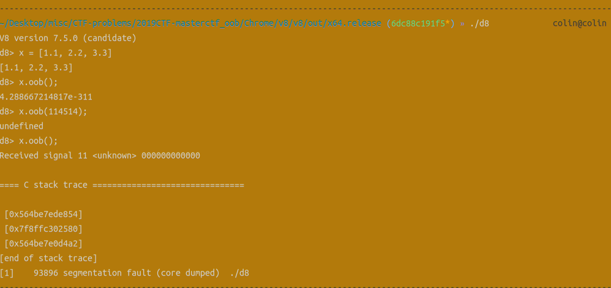

以前没有了解v8 pwn的时候，还以为这是什么非常高深莫测，很难学的东西，但实际上了解的基本原理后才发现，这东西实际上和PHP pwn差不多，都是用底层语言去解释执行另一门语言，PHP pwn中，我们使用的是C语言，而在v8中，我们使用的是C++语言来解释Javascript。
要理解v8 pwn的原理，首先需要学会如何魔改v8。v8是Chrome开发的一个开源Javascript执行引擎，编译完成的输出二进制文件为d8。
编译方法参考：传送门
注意在解决实际问题的时候要用对应的v8版本，之后：
使用git reset --hard回退到对应的版本
使用git apply应用题目的diff文件
执行gclient sync -D进行同步
执行tools/dev/gm.py x64.debug重新编译
最后一步要注意如果在Python执行过程中出现问题，可以在root权限下修改/usr/bin中Python的链接到Python2再尝试。（一般在编译较老版本的v8时会出现此类问题）
在v8中有很多的内置类型、方法与函数，包括基本类型（整数浮点数布尔值数组字符串等）等。这些内置类型在builtins-definitions.h中进行了定义（新版本位于builtins/builtins-definitions.h），下面是示例代码片段：
1 2 3 4 5 6 7 8 9 10 11 12 13 14 \ CPP (ArrayPop, kDontAdaptArgumentsSentinel) \ TFJ (ArrayPrototypePop, kDontAdaptArgumentsSentinel) \ \ CPP (ArrayPush, kDontAdaptArgumentsSentinel) \ TFJ (ArrayPrototypePush, kDontAdaptArgumentsSentinel) \ \ CPP (ArrayShift, kDontAdaptArgumentsSentinel) \ \ CPP (ArrayUnshift, kDontAdaptArgumentsSentinel) \ \ TFS (CloneFastJSArray, NeedsContext::kYes, kSource) \ TFS (CloneFastJSArrayFillingHoles, NeedsContext::kYes, kSource) \
可以看到，这里是定义了Javascript数组使用到的一些方法。但是使用的宏不同。这里的TFJ和TFS都是v8中定义的TurboFan优化宏定义，相较于直接调用底层C++代码执行的CPP定义更加高效。对于解题而言，我们只需要关注CPP即可。更多相关细节可参考：资料 。CPP宏的第二个参数kDontAdaptArgumentsSentinel指的是需要在C++实现代码中通过Receiver自行完成函数参数的接收，这个我们后面会看到。
如果我们需要对v8进行魔改，想让用户能够直接调用我们自己添加的函数或者方法，就一定需要在这个文件中添加函数的定义。但光有定义还不行，还需要在v8引擎启动的时候能够安装我们的函数。这就需要我们修改bootstrapper.cc（新版本为init/bootstrapper.cc），下面是示例代码：
1 2 3 4 5 6 7 8 9 10 11 12 13 14 15 16 17 SimpleInstallFunction (isolate_, proto, "findIndex" , Builtin::kArrayPrototypeFindIndex, 1 , kDontAdapt); SimpleInstallFunction (isolate_, proto, "findLast" , Builtin::kArrayPrototypeFindLast, 1 , kDontAdapt); SimpleInstallFunction (isolate_, proto, "findLastIndex" , Builtin::kArrayPrototypeFindLastIndex, 1 , kDontAdapt); SimpleInstallFunction (isolate_, proto, "lastIndexOf" , Builtin::kArrayPrototypeLastIndexOf, 1 , kDontAdapt); SimpleInstallFunction (isolate_, proto, "pop" , Builtin::kArrayPrototypePop, 0 , kDontAdapt); SimpleInstallFunction (isolate_, proto, "push" , Builtin::kArrayPrototypePush, 1 , kDontAdapt); SimpleInstallFunction (isolate_, proto, "reverse" , Builtin::kArrayPrototypeReverse, 0 , kDontAdapt); SimpleInstallFunction (isolate_, proto, "shift" , Builtin::kArrayPrototypeShift, 0 , kDontAdapt);
使用SimpleInstallFunction函数进行安装。这个函数的参数含义是（Kimi生成）：
1 2 3 4 5 6 7 8 9 10 11 12 13 Isolate* isolate：这是指向当前V8 Isolate实例的指针。Isolate是V8中用于隔离不同JavaScript环境的一个概念，每个Isolate实例代表一个独立的JavaScript执行环境。在V8中，Isolate用于管理内存分配、垃圾回收等。 Handle<JSObject> base：这是一个指向JSObject的Handle，JSObject是V8中表示JavaScript对象的类。这个参数指定了要在其上安装函数的JavaScript对象。 const char* name：这是一个指向C字符串的指针，表示要安装的函数的名称。这个名称将被用作JavaScript对象上函数的属性名。 Builtin call：这是一个Builtin函数指针，指向一个内置的C++函数，这个函数将作为JavaScript函数的实现。Builtin函数是V8提供的一组预定义的函数，用于执行常见的操作。 int len：这是一个整数，表示函数的参数长度，即函数可以接受的参数个数。 AdaptArguments adapt：这是一个函数指针，指向一个用于参数适配的函数。如果JavaScript函数的参数个数与Builtin函数的参数个数不匹配，adapt函数会被调用来适配参数。 PropertyAttributes attrs：这是一个枚举值，指定了安装到对象上的属性（在这个情况下是函数）的属性。PropertyAttributes定义了属性的一些特性，比如是否可枚举（DontEnum）、是否可写（DontDelete）和是否可配置（ReadOnly）。
这里第二个参数的几个常用传参有：
object_function：用于Object对象的方法proto：函数原型array_function：用于数组的函数
对于自定义函数，需要传入proto。
下面我们就来看看如何定义内置函数的内容。
1 2 3 4 5 6 7 8 9 10 11 12 13 14 15 16 17 18 19 20 21 22 23 24 25 26 27 28 29 30 BUILTIN (ArrayPush) { HandleScope scope (isolate) ; Handle<Object> receiver = args.receiver (); if (!EnsureJSArrayWithWritableFastElements (isolate, receiver, &args, 1 , args.length () - 1 )) { return GenericArrayPush (isolate, &args); } Handle<JSArray> array = Cast <JSArray>(receiver); bool has_read_only_length = JSArray::HasReadOnlyLength (array); if (has_read_only_length) { return GenericArrayPush (isolate, &args); } int to_add = args.length () - 1 ; uint32_t len = static_cast <uint32_t >(Object::NumberValue (array->length ())); if (to_add == 0 ) return *isolate->factory ()->NewNumberFromUint (len); DCHECK_LE (to_add, Smi::kMaxValue - Smi::ToInt (array->length ())); ElementsAccessor* accessor = array->GetElementsAccessor (); uint32_t new_length; MAYBE_ASSIGN_RETURN_FAILURE_ON_EXCEPTION ( isolate, new_length, accessor->Push (array, &args, to_add)); return *isolate->factory ()->NewNumberFromUint ((new_length)); }
上面就是ArrayPush的C++定义，使用BUILTIN宏完成函数体的定义。函数有参数args，表示Javascript函数的参数列表，args是BuiltinArguments类的指针。可以通过args.length()获取参数个数，args.at<>()获取第几个参数。
在BUILTIN宏中还会定义一个Builtins::k???，这是用来定义返回值类型的关键结构。在老版本的compiler/typer.cc，新版的compiler/turbofan.cc中有函数：
Type Typer::Visitor::JSCallTyper(Type fun, Typer* t)
其中有一个很大的switch语句，我们需要在其中定义自定义函数的返回值类型。如果没有返回值则定义为Type::Undefined()，如果定义的是方法且返回值是该方法所属的对象，则定义为Type::Receiver()：
1 2 3 4 5 6 7 8 9 10 11 12 13 14 case Builtin::kArrayPrototypeJoin: return Type::String (); case Builtin::kArrayPrototypeLastIndexOf: return Type::Range (-1 , kMaxSafeInteger, t->zone ()); case Builtin::kArrayMap: return Type::Receiver (); case Builtin::kArrayPush: return t->cache_->kPositiveSafeInteger; case Builtin::kArrayPrototypeReverse: case Builtin::kArrayPrototypeSlice: return Type::Receiver (); case Builtin::kArraySome: return Type::Boolean ();
除此之外，还有字符串Type::String()、布尔值Type::Boolean()、数值Type::PlainNumber()、不是数字Type::NaN()等。
下面通过一个实例帮助我们更深刻地理解上述过程。
现在，我们需要实现一个内置函数，该函数可直接调用，接受一个数值参数，返回这个参数+100的值。
使用的v8版本为13.3.0，所有的builtins函数都在src/builtins/builtins-xxx.cc这一系列的文件中定义。我们可以新建一个文件叫builtins-myfunc.cc。
由于我们新创建了一个文件，因此需要在v8根目录的BUILD.bazel和BUILD.gn中的对应位置添加文件名：
1 2 3 4 5 6 7 8 9 10 11 12 13 14 15 16 17 18 19 // v8 13.3.0, BUILD.bazel, line 1341 "src/builtins/builtins-function.cc", "src/builtins/builtins-global.cc", "src/builtins/builtins-internal.cc", "src/builtins/builtins-json.cc", "src/builtins/builtins-myfunc.cc", "src/builtins/builtins-number.cc", "src/builtins/builtins-object.cc", "src/builtins/builtins-promise.h", // v8 13.3.0, BUILD.gn, line 5420 "src/builtins/builtins-global.cc", "src/builtins/builtins-internal.cc", "src/builtins/builtins-intl.cc", "src/builtins/builtins-json.cc", "src/builtins/builtins-myfunc.cc", "src/builtins/builtins-number.cc", "src/builtins/builtins-object.cc", "src/builtins/builtins-reflect.cc",
首先给出写好的代码，然后我们逐行分析：
1 2 3 4 5 6 7 8 9 10 11 12 13 14 15 16 17 18 19 20 21 22 23 24 25 26 27 28 29 30 31 #include "src/builtins/builtins-utils-inl.h" namespace v8 {namespace internal {BUILTIN (MyFunc) { HandleScope scope (isolate) ; Handle<Object> value = args.atOrUndefined (isolate, 1 ); if (IsJSPrimitiveWrapper (*value)) { value = handle (Cast <JSPrimitiveWrapper>(value)->value (), isolate); } if (!IsNumber (*value)) { THROW_NEW_ERROR_RETURN_FAILURE ( isolate, NewTypeError (MessageTemplate::kArgumentIsNotUndefinedOrInteger, isolate->factory ()->NewStringFromAsciiChecked ( "My.Func" ), isolate->factory ()->Number_string ())); } double const value_number = Object::NumberValue (*value); return *isolate->factory ()->NewNumber (value_number + 100 ); } } }
这里首先需要包含src/builtins/builtins-utils-inl.h，以使用BUILTIN宏和参数解析的相关方法。然后我们编写的函数需要包在命名空间v8和internal中。
BUILTIN后面的括号中写我们定义的函数名，第一句固定为HandleScope scope(isolate);。
后面获取参数可以使用args.at(index)或args.atOrUndefined(isolate, index)，注意第一个参数的索引值为1，这两个方法的返回值都是Handle<Object>，也就是一个Javascript Object的封装，其中重新实现了*运算符用于获取其中的对象。
IsJSPrimitiveWrapper()用于判断一个Javascript Object是否是基本类型，IsNumber()则判断是否是数值类型。内部的THROW_NEW_ERROR_RETURN_FAILURE充当assert的作用，可提供报错，这里的MessageTemplate是一个枚举类型，其中包含很多错误类型。
后面的Object::NumberValue用于将一个Object类型转换为浮点数类型，当然这个Object类型本身需要是一个数值类型，因此我们在前面需要添加检查。下面的isolate是BUILTIN宏中定义的主逻辑函数的一个参数，是当前Javascript引擎直接绑定的类型，也重新实现了*运算符。*isolate->factory()是经常使用的一个东西，这个Factory可以帮助我们创建Javascript对象，作为返回值返回。如这里的NewNumber方法即需要传入一个double类型返回一个Javascript Number类型。我们这里将浮点数加100的值传入该方法即可返回。
在init/bootstrapper.cc中则需要添加下面几行：
1 2 3 { SimpleInstallFunction (isolate_, global_object, "MyFunc" , Builtin::kMyFunc, 1 , kDontAdapt); }
由于MyFunc是需要直接调用的，和eval类似，因此SimpleInstallFunction的第二个参数为global_object。如果仔细观察bootstrapper.cc中的其他安装函数调用，就会知道应该如何定义类似于Console.log这样的调用：
1 2 3 4 Handle<JSObject> math = factory->NewJSObject (isolate_->object_function (), AllocationType::kOld); JSObject::AddProperty (isolate_, global, "Math" , math, DONT_ENUM); SimpleInstallFunction (isolate_, math, "abs" , Builtin::kMathAbs, 1 , kAdapt);
方法很简单，首先使用factory->NewJSObject定义一个新的对象，然后在global这个全局的类中定义一个属性JSObject::AddProperty，将这个对象作为属性，并给个名字。后面就可以通过SimpleInstallFunction在这个类中定义函数作为属性了。
最终效果：
当然其他地方的定义也不能忘记：
1 2 3 4 5 6 7 8 CPP (MyFunc, kDontAdaptArgumentsSentinel) \switch (function.shared (t->broker ()).builtin_id ()) {case Builtin::kMyFunc: return Type::Number ();
上面我们自己完成了一个全局函数的简单定义，下面来看一下2019年*CTF的oob题目中对于Array类型的定义：
1 2 3 4 5 6 7 8 9 10 11 12 13 14 15 16 17 18 19 20 21 22 23 24 25 26 27 28 29 30 31 32 33 34 35 36 37 38 39 40 41 42 43 44 45 46 47 48 49 50 51 52 53 54 55 56 57 58 59 60 61 62 63 64 65 66 67 68 69 70 @@ -1668,6 +1668,8 @@ void Genesis::InitializeGlobal(Handle<JSGlobalObject> global_object, Builtins::kArrayPrototypeCopyWithin, 2, false); SimpleInstallFunction(isolate_, proto, "fill", Builtins::kArrayPrototypeFill, 1, false); + SimpleInstallFunction(isolate_, proto, "oob", + Builtins::kArrayOob,2,false); SimpleInstallFunction(isolate_, proto, "find", Builtins::kArrayPrototypeFind, 1, false); SimpleInstallFunction(isolate_, proto, "findIndex", @@ -361,6 +361,27 @@ V8_WARN_UNUSED_RESULT Object GenericArrayPush(Isolate* isolate, return *final_length; } } // namespace +BUILTIN(ArrayOob){ + uint32_t len = args.length(); + if(len > 2) return ReadOnlyRoots(isolate).undefined_value(); + Handle<JSReceiver> receiver; + ASSIGN_RETURN_FAILURE_ON_EXCEPTION( + isolate, receiver, Object::ToObject(isolate, args.receiver())); + Handle<JSArray> array = Handle<JSArray>::cast(receiver); + FixedDoubleArray elements = FixedDoubleArray::cast(array->elements()); + uint32_t length = static_cast<uint32_t>(array->length()->Number()); + if(len == 1){ + //read + return *(isolate->factory()->NewNumber(elements.get_scalar(length))); + }else{ + //write + Handle<Object> value; + ASSIGN_RETURN_FAILURE_ON_EXCEPTION( + isolate, value, Object::ToNumber(isolate, args.at<Object>(1))); + elements.set(length,value->Number()); + return ReadOnlyRoots(isolate).undefined_value(); + } +} BUILTIN(ArrayPush) { HandleScope scope(isolate); @@ -368,6 +368,7 @@ namespace internal { TFJ(ArrayPrototypeFlat, SharedFunctionInfo::kDontAdaptArgumentsSentinel) \ /* https://tc39.github.io/proposal-flatMap/#sec-Array.prototype.flatMap */ \ TFJ(ArrayPrototypeFlatMap, SharedFunctionInfo::kDontAdaptArgumentsSentinel) \ + CPP(ArrayOob) \ \ /* ArrayBuffer */ \ /* ES #sec-arraybuffer-constructor */ \ @@ -1680,6 +1680,8 @@ Type Typer::Visitor::JSCallTyper(Type fun, Typer* t) { return Type::Receiver(); case Builtins::kArrayUnshift: return t->cache_->kPositiveSafeInteger; + case Builtins::kArrayOob: + return Type::Receiver(); // ArrayBuffer functions. case Builtins::kArrayBufferIsView:
这里使用的v8版本为7.5，可以看到为Array类型定义了一个新的属性函数oob。我们重点关注一下实现细节：
1 2 3 4 5 6 7 8 9 10 11 12 13 14 15 16 17 18 19 20 21 BUILTIN (ArrayOob){ uint32_t len = args.length (); if (len > 2 ) return ReadOnlyRoots (isolate).undefined_value (); Handle<JSReceiver> receiver; ASSIGN_RETURN_FAILURE_ON_EXCEPTION ( isolate, receiver, Object::ToObject (isolate, args.receiver ())); Handle<JSArray> array = Handle<JSArray>::cast (receiver); FixedDoubleArray elements = FixedDoubleArray::cast (array->elements ()); uint32_t length = static_cast <uint32_t >(array->length ()->Number ()); if (len == 1 ){ return *(isolate->factory ()->NewNumber (elements.get_scalar (length))); }else { Handle<Object> value; ASSIGN_RETURN_FAILURE_ON_EXCEPTION ( isolate, value, Object::ToNumber (isolate, args.at <Object>(1 ))); elements.set (length,value->Number ()); return ReadOnlyRoots (isolate).undefined_value (); } }
首先判断了函数的参数个数，args.at(0)是这个方法的父类型实例，在第一个例子中是全局Object实例，在这里就应该是Array实例。因此这里len不能大于2，也就表示不能传入2个以上的参数。
下面的args.receiver()实际上就是在获取第0个参数，也就是Array实例，这里是使用Handle<JSArray>::cast完成的类型转换，不过在较新的C++中可以直接使用Cast转换。下面获取了数组的元素（array->elements）并转换为FixedDoubleArray类型。
然后通过array->length()->Number()首先获取数组长度的Javascript Number实例，再转换为uint32_t类型。下面判断，如果参数长度等于1（也就是不传参），就会出现问题，为什么呢，因为elements.get_scalar()就是获取对应下标的元素，但是获取length处的元素不就相当于溢出一个元素了吗？所以这里存在漏洞。
下面如果参数长度不为1，也会有一个溢出操作，就是element.set，将数组后面一个地方的值进行修改。从宏定义名来看，ASSIGN_RETURN_FAILURE_ON_EXCEPTION应该是可以带有检查地完成赋值操作，value应该被赋值为第一个参数，也就是传入的参数的值。这里我们简单验证一下是不是这样。
可以看到Debug输出下出现了问题，因为Debug模式输出会检查数组赋值。
如果在Release模式下运行，则是这个样子：

这里的输出会显示一个浮点数值。至于这个浮点数值具体为什么是这个数，我们将在下一篇blog中通过分析本题深入理解。